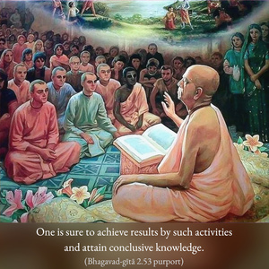
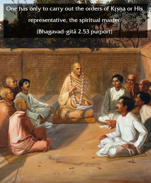

When your mind is no longer disturbed by the flowery language of the Vedas, and when it remains fixed in the trance of self-realization, then you will have attained the divine consciousness.


To say that one is in samādhi is to say that one has fully realized Kṛṣṇa consciousness; that is, one in full samādhi has realized Brahman, Paramātmā and Bhagavān. The highest perfection of self-realization is to understand that one is eternally the servitor of Kṛṣṇa and that one’s only business is to discharge one’s duties in Kṛṣṇa consciousness. A Kṛṣṇa conscious person, or unflinching devotee of the Lord, should not be disturbed by the flowery language of the Vedas nor be engaged in fruitive activities for promotion to the heavenly kingdom. In Kṛṣṇa consciousness, one comes directly into communion with Kṛṣṇa, and thus all directions from Kṛṣṇa may be understood in that transcendental state. One is sure to achieve results by such activities and attain conclusive knowledge. One has only to carry out the orders of Kṛṣṇa or His representative, the spiritual master.